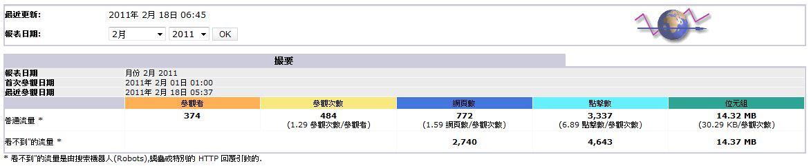
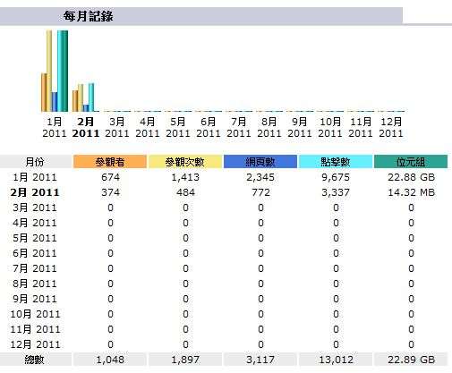
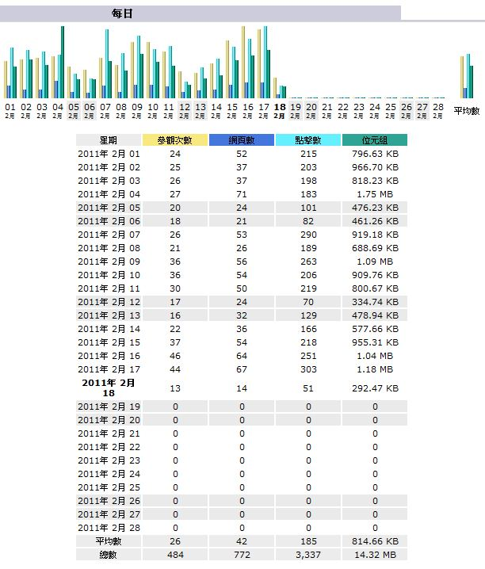
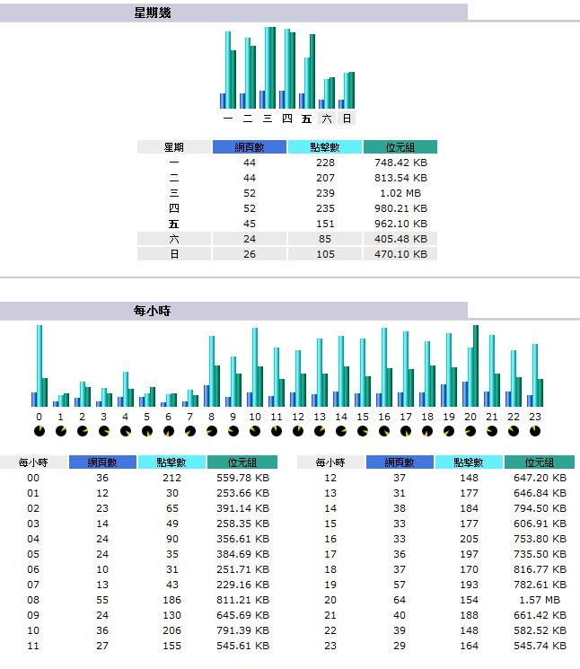
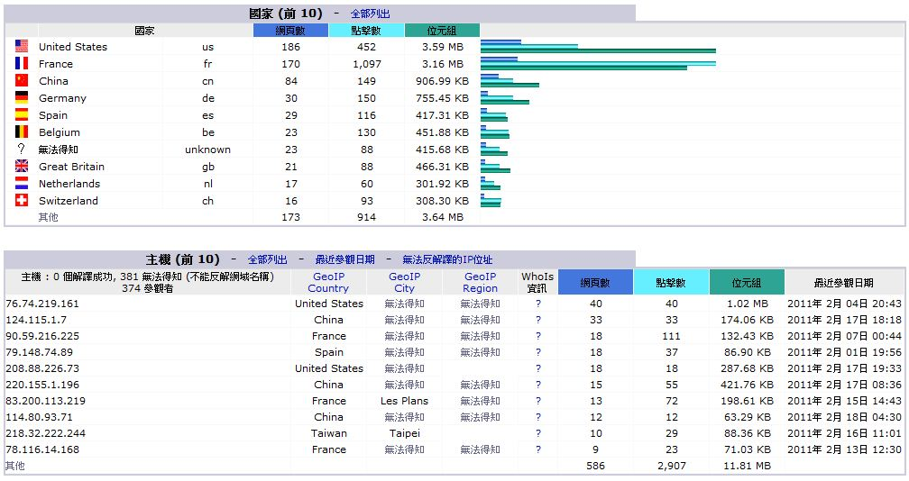
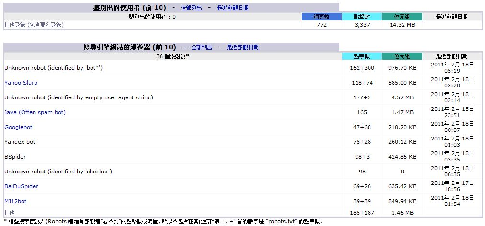
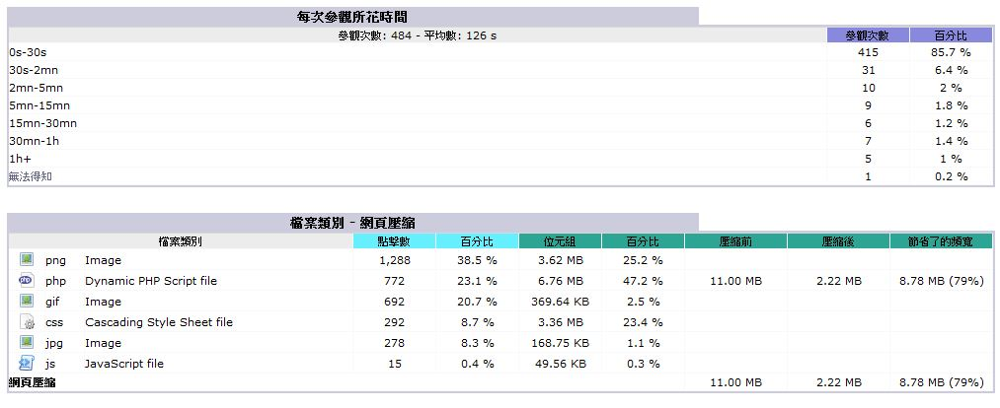
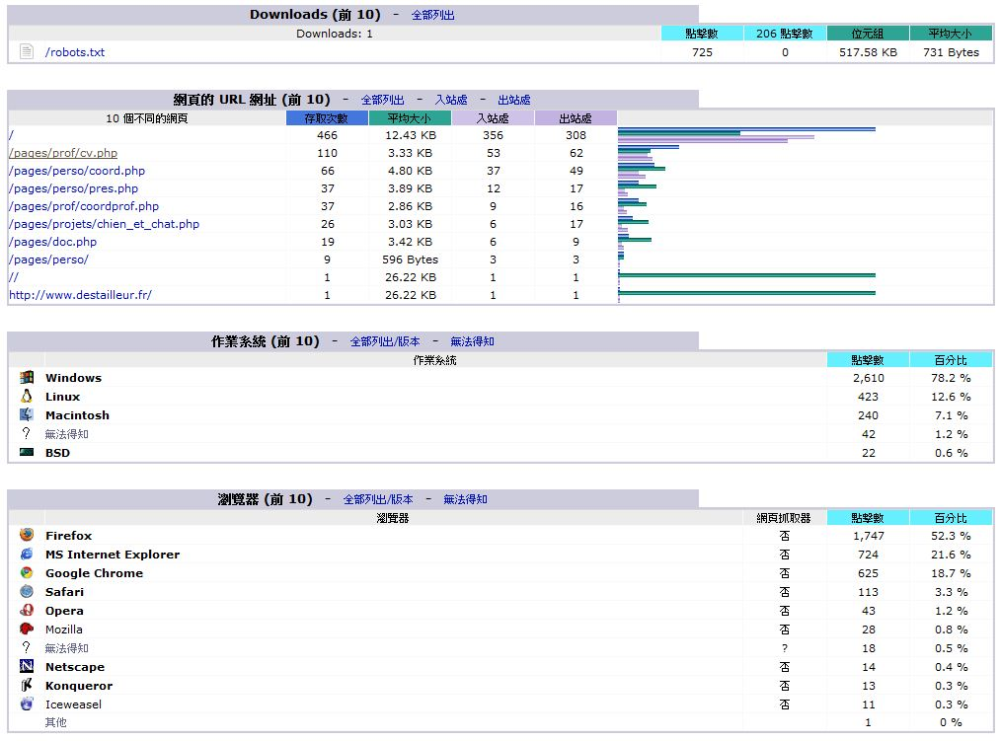
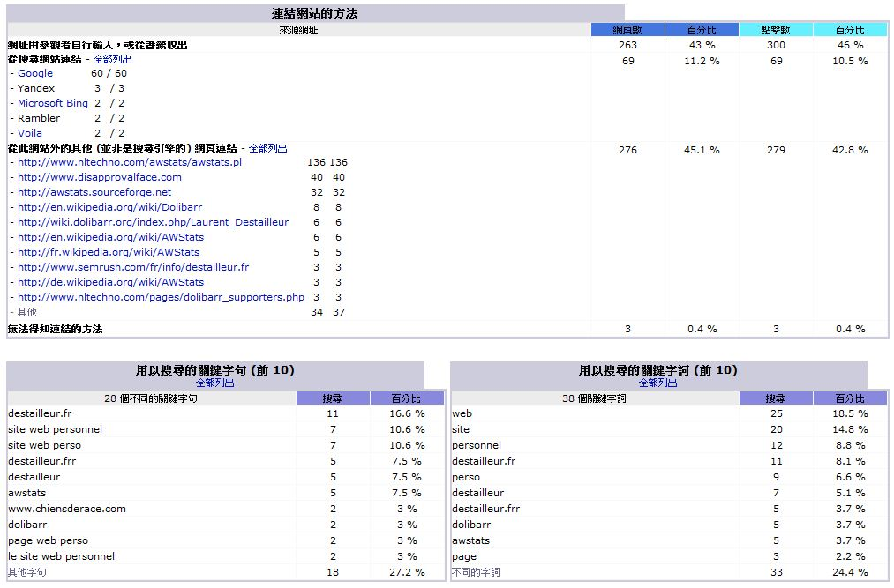

感謝您對「自由軟體鑄造場」的支持與愛護，十多年來「自由軟體鑄造場」受中央研究院支持，並在資訊科學研究所以及資訊科技創新研究中心執行，現已完成階段性的任務。 原網站預計持續維運至 2021年底，網站內容基本上不會再更動。本網站由 Denny Huang 備份封存。
也紀念我們永遠的朋友 李士傑先生（Shih-Chieh Ilya Li）。
也紀念我們永遠的朋友 李士傑先生（Shih-Chieh Ilya Li）。
AWStats — 多功能記錄檔分析工具
建立日期 2011-03-08 00:31 最近更新在 2011-04-12 09:41
前言
拜網際網路蓬勃發展所賜，大家都能隨時上網尋找各類資訊。對於企業而言，建立公司網站更是與網路上網友們交流的首要之選。建立一個美侖美奐、功能完善的企業網站，不謹有助提昇企業的品牌形象，也能藉此擬定行銷策略開拓網路市場。當企業涉及網路行銷，就必須了解什麼是「搜尋引擎最佳化 (Search Engine Optimization, SEO)」。搜尋引擎最佳化就是透過認知、分析使用者以關鍵字搜尋的行為，讓使用者在網路搜尋時更容易找到該企業網站，以增加網站曝光率的一種方式。因此企業網站若想在網際網路上得到高曝光率，進行網站搜尋引擎最佳化便是企業內行銷與電腦技術部門刻不容緩的任務。
為了達成這樣的任務，通常中大型企業的網站管理者會選擇二種方式：一為透過內部電腦技術部門自行撰寫分析報表軟體，針對網站伺服器的記錄檔進行分析，以便得到需要的資訊。而另一種方式則是購買現成的記錄檔分析軟體，例如 Websense。但是上述的二種方式並不適用於沒有電腦技術部門或預算的單位，例如小型企業或個人工作室。本次特別撰文介紹在開放原始碼世界中，一套非常適合小型企業或個人工作室使用，而且功能強大的流量統計軟體－AWStats。
記錄檔分析統計工具 AWStats (https://awstats.sourceforge.net) 是一套遵循 GNU 通用公共授權條款 (GNU General Public License, GPL) 的開放原始碼軟體。這個分析軟體需要的安裝容量雖然精簡，功能卻一點也不馬虎。以下舉例如下：
- 支援跨平台作業系統：您可以在 Windows 或 Unix-Like 作業系統上輕鬆建立分析記錄檔的運作環境。
- 報表支援多國語言：AWStats 所產生的分析統計報表支援多國語言，使得閱讀分析報表的管理者不會因為語言而產生困擾。
- 支援分析多種服務記錄檔：AWStats 支援相當多的網路服務記錄檔。
- 網頁記錄檔：支援 Apache (combined/ common log format XLF/ ELF/ CLF)、Microsoft IIS (W3C log format)…等。
- 快取記錄檔：支援 Squid (common log format, CLF) …等。
- 串流記錄檔：支援 Darwin Streaming Server、Windows Media Server…等。
- 郵件記錄檔：支援 Postfix、Sendmail、Qmail、Mdaemon、www4mail…等。
- FTP記錄檔：支援 ProFTPD、VSftpd…等。
- 詳盡的統計報表：AWStats 產生的分析報表具備非常詳盡內容。例如，週期性網路流量、來源國家、來源 IP 位址、參觀網站時間、參觀網頁、訪客作業系統、使用的瀏覽器、連結網站的來源、連結網站的關鍵字…等。
使用者透過 AWStats 可以分析網站記錄檔，或企業相關網路服務記錄檔。AWStats 提供詳細的分析統計報表，企業的網管或行銷人員得以輕鬆分析網路使用者瀏覽企業網站的流量、以及在網站的存取行為，接著以 SEO 為目標，改善網站內容及方向，進而提升企業的品牌形象，並為企業帶入龐大網路商機。以下介紹 AWStats 的主要功能與安裝技巧。
定期產生網站記錄檔
為何需要定期產生網站記錄檔？那是有原因的。目前使用最多的網路伺服器軟體 Apache，其所提供網頁服務套件會自動產生存取記錄檔，但它的預設記錄方式是持續將來訪記錄及瀏覽存取行為，寫入單一個檔案中。然而隨著網站經營時間增加或網路流量增大，這樣的記錄檔產生方式會使 Apache 記錄檔愈來愈大。單一記錄檔過大時，會增加系統讀取資料需要的時間，且因為 Apache 記錄檔預設存放路徑為 /var 掛載點，預設情況下分割空間小，掛載點分配不當的話，還可能導致系統運作出現問題。
因為以上問題，比較好的方式是設定 Apache 網頁服務定期每天產生一個記錄檔。這樣規劃使 Apache 不必長期持續寫入單一記錄檔而造成記錄檔日漸肥大，也提昇在記錄檔進行細部查詢的效率，例如某天的訪客行為，或抓取網站被駭客攻擊當日的訪客及其行為記錄。對這個問題，我們可以安裝一個小而美的 cronolog 套件，來與 Apache 網頁服務搭配，依序產生單日記錄檔。
實作環境
- FreeBSD 8.1 Release
- Apache-2.2.17_1
- AWStats-7.0_1,1
- cronolog-1.6.2_4
- libiconv-1.13.1_1
安裝 AWStats 及 Cronolog 套件
在進行設定前，請先安裝相關套件，並且強烈建議您在安裝套件以前先更新 ports tree，以確保安裝套件是最新且穩定的版本。更新完成後請查看 UPDATING 文件，確認所安裝套件的注意事項，並進行必要的設定調整。再請依下列指令，切換至相關路徑以安裝套件。
# cd /usr/ports/www/awstats
# make install clean
# cd /usr/ports/sysutils/cronolog
# make install clean
# cd /usr/port/converters/libiconv
# make install clean
修改 AWStats 設定檔
AWStats 套件安裝完成後，建議複製 AWStats 範例檔案 (awstats.model.conf)，以副本進行修改，以下僅列出需要將預設值修改為自身網站資訊的部份。下列設定中，值得注意的地方是，指定 AWStats 分析軟體屆時讀取 Apache 記錄檔進行分析時，會讀取當天的記錄檔參數 (%YYYY=year, % MM=month, % DD=day)。
#vi /usr/local/www/awstat/cgi-bin/awstats.web.conf
LogFile="/log/%YYYY-0_%MM-0_%DD-access.log" //指定 Apache 記錄檔路徑
SiteDomain="www.weithenn.org" //指定網站名稱 FQDN
DirCgi="/awstats " //設定 Apache 執行 CGI 路徑
Lang="tw" //設定語系為正體中文
修改 Apache 設定檔
接下來，要修改 Apache 網頁服務設定檔的內容。首先，將 Apahce 的存取及錯誤記錄檔指定為每天定期產生，這是為了使 Apache 配合剛才安裝的 cronolog 套件。這當中使用到的參數 (%Y=year, %m=month, %d=day) 代表每天產生記錄檔一次。其次，修改 Apache 設定檔，以使 AWStats 設定值配合 Apache 設定中相對應的 CGI 執行環境，同使得以載入 AWStats 分析報表的相關資料。執行方式如下：
#vi /usr/local/etc/apache22/httpd.conf
CustomLog "|/usr/local/sbin/cronolog /log/%Y_%m_%d-access.log" combined
ErrorLog "|/usr/local/sbin/cronolog /log/%Y_%m_%d-error.log"
Alias /awstatsclasses "/usr/local/www/awstats/classes/" //版型路徑別名
Alias /awstatscss "/usr/local/www/awstats/css/" //CSS 路徑別名
Alias /awstatsicons "/usr/local/www/awstats/icons/" //Icons 路徑別名
ScriptAlias /awstats/ "/usr/local/www/awstats/cgi-bin/" //CGI 路徑別名
＜Directory "/usr/local/www/awstats/"＞ //設定 AWStats 資料夾權限
Options None
AllowOverride None
Order allow,deny
Allow from all
＜/Directory＞
#/usr/local/etc/rc.d/apache22 configtest //檢查設定檔語法是否有誤
#/usr/local/etc/rc.d/apache22 graceful //重新啟動 Apache 服務
執行分析記錄檔任務
相關環境準備完成後，接下來便可以透過 AWStats 報表分析程式，分析 Apache 記錄檔。下列指令中要注意 –config=web 指令，因為如前言中所述，AWStats 可以分析多種服務記錄檔，因此在複製 AWStats 範例檔後，針對此次網站服務的設定檔，將範例檔副本重新命名為 awstats.web.conf。於是，執行下列指令時就會去找該 AWStats 設定檔，並開始分析記錄檔。執行方式如下：
#/usr/local/www/awstats/cgi-bin/awstats.pl -config=web -update
Create/Update database for config "/usr/local/www/awstats/cgi-bin/awstats.web.conf" by AWStats version 7.0 （build 1.971）
From data in log file "/log/2011_02_18-access.log"...
Phase 1 : First bypass old records, searching new record...
Direct access to last remembered record is out of file.
So searching it from beginning of log file...
Phase 2 : Now process new records （Flush history on disk after 20000 hosts）... Jumped lines in file: 0
Parsed lines in file: 735502
Found 0 dropped records,
Found 56 corrupted records,
Found 0 old records,
Found 735446 new qualified records.
觀看 AWStats 分析報表
完成後，便可開啟瀏覽器，查看 AWStats 執行後詳細的網站分析報表。報表圖示摘要如下：
進入本頁後，選擇欲查詢報表週期，即可展示分析報表。報表內容包括：

▲ 圖1 訪客報表：可以摘要列出訪客人數、參觀次數、瀏覽網頁數、點擊次數、流量位元組等流量指標。

▲ 圖2 每月訪客報表：顯示一年度流量指標的月變化。

▲ 圖3 每日訪客報表：顯示單月各流量指標的日變化。

▲ 圖4 每週及每小時訪客報表：經過統計，顯示網站流量的週-週期性變化，以及時-週期性變化。

▲ 圖5 國家及主機訪客報表：以國家及主機為單位，顯示前十流量來源，以及其流量指標數值。

▲ 圖6 訪客瀏覽器類型報表：顯示流量來源的主要十個瀏覽器，及透過該瀏覽器所計錄的點擊數與位元組。

▲ 圖7 訪客參觀及存取檔案報表：顯示訪客主要存取的檔案，以及當月該檔案的點擊數。

▲ 圖8 訪客瀏覽網址及作業系統類型報表：顯示訪客主要瀏覽網址及使用的作業系統，與點擊次數。

▲ 圖9 訪客連結網站及搜尋關鍵字報表：顯示由外部網頁，或搜尋引擎所導入流量的主要關鍵字詞。
以上圖片來源：AWStats 開發贊助推廣者網站 NLTechno，展示頁面的網頁抓圖。
處理中文翻譯檔案編碼問題
雖然 AWStats 支援多國語言包括正體中文在內，但是 AWStats 預設將多國語言翻譯為正體中文時，檔案的編碼格式為 Big5。採用 Big5 編碼格式的翻譯檔當，可以瀏覽大部份的分析報表，但分析統計報表中「搜尋的關鍵字句」項目，正體中文的字體卻顯示為亂碼。此時我們可以透過先前安裝的 libiconv 套件，將 AWStats 翻譯檔案的編碼方式，由 Big5 轉換為 UTF-8 來解決此一問題。
#cd /usr/local/www/awstats/cgi-bin/lang
#cp awstats-tw.txt awstats-tw.txt.big5
# iconv -f BIG5 -t UTF-8 awstats-tw.txt.big5 > awstats-tw.txt //檔案編碼轉換
#vi awstats-tw.txt
PageCode=utf-8 //修改編碼為 UTF-8
處理 Apache 記錄檔小技巧
對於設備管理的方式，每個網管人員都有自己的喜好，也正因為每人的管理方式不同，接手別人的工作時，往往需要先習慣他人的管理方式，再慢慢修正為自已習慣的管理方式，以便減少管理時間。舉例而言，假設前網站管理人透過內建的 newsyslog 服務，設定每三天定期產生 Apache 存取記錄檔，再做進一步分析與管理。在這樣的狀況下，當您接手網站管理、及使用者行為分析時，該如何處理及分析先前定期產生的 Apache 記錄檔呢？筆者在此拋磚引玉，分享個人作法。
首先使用內建的排序指令 sort，將先前定期每三天產生的 Apache 記錄檔依時間欄位排序，接著將排序後的記錄檔合併並重新輸出為每個月的記錄檔，完成排序及合併後，我們便能使用 AWStats 分析每個月的記錄檔。當然最後根本的解決方法，還是透過安裝 cronolog 套件，並配合系統排程的方式，使 Apache 記錄檔的分析作業設定為自動處理，以解決網站管理人員的負擔。
以下指令為執行記錄檔合併的指令及參數說明：
- www-access.log.1 ~ 10： 每三天產生一次的 Apache 記錄檔
- sort：針對文字檔案進行內容排序的內建指令
- -m：合併經過排序後的檔案
- -t “ “：指定文字檔案內欄位與欄位之間的分割字元為何，此例為空格
- -k 4：指定文字檔案中排序的欄位，此例為第四欄位
- -o 201012.log：指定排序及合併後的檔案名稱
#sort -m -t " " -k 4 -o 201012.log www-access.log.{1,2,3,4,5,6,7,8,9,10}
結語
透過本文的實際操作及示範後，相信讀者對於 AWStats 這套開放原始碼、且功能強大的分析記錄檔軟體有一定程度的認識，相信對於沒有電腦技術部門或預算的使用者來說，也能嘗試使用 AWStats 分析記錄檔，做為提升網站經營成效的解決方案。
專欄總覽


自由軟體鑄造場 製作 最佳瀏覽狀態：IE7或Firefox2.0以上 (建議使用Firefox) ‧ 解析度1024*768
E-Mail：contact@openfoundry.org Address：台北市南港區研究院路2段128號 中央研究院資訊科學研究所 . 隱私權條款. 使用條款
E-Mail：contact@openfoundry.org Address：台北市南港區研究院路2段128號 中央研究院資訊科學研究所 . 隱私權條款. 使用條款